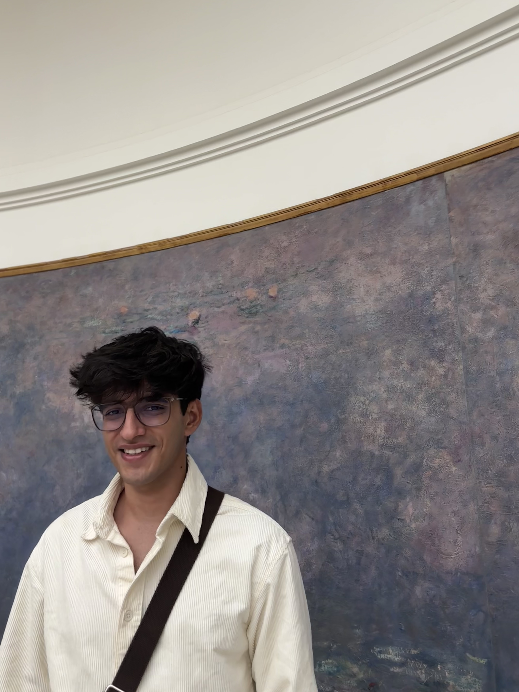

Hello, I'm
Ayaan Bedi
I am a PhD student at Aix-Marseille Université, Marseille, supervised by Karoliina Lehtinen and funded by the SCHADOC programme. Previously, I completed my Master's in Computer Science at Chennai Mathematical Institute, India.
My research interests lie broadly in theoretical computer science, particularly automata theory, logic, and games. I am especially interested in history-deterministic quantitative automata and their connections to formal methods and verification.
Email me at: ayaan.bedi@lis-lab.fr
